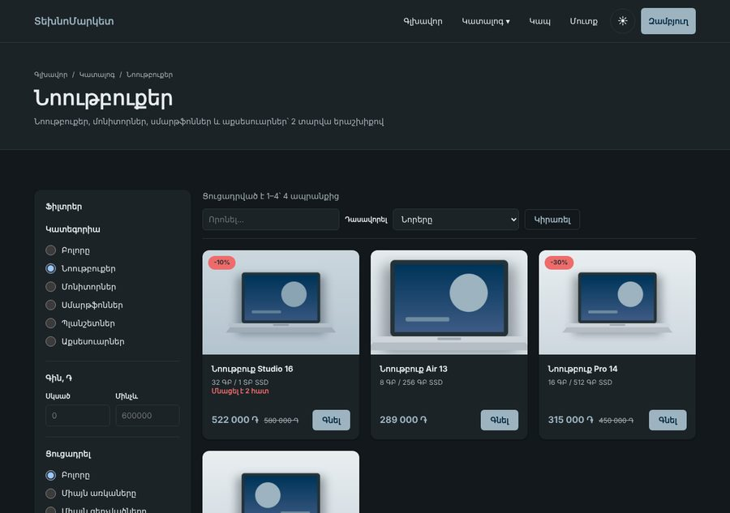
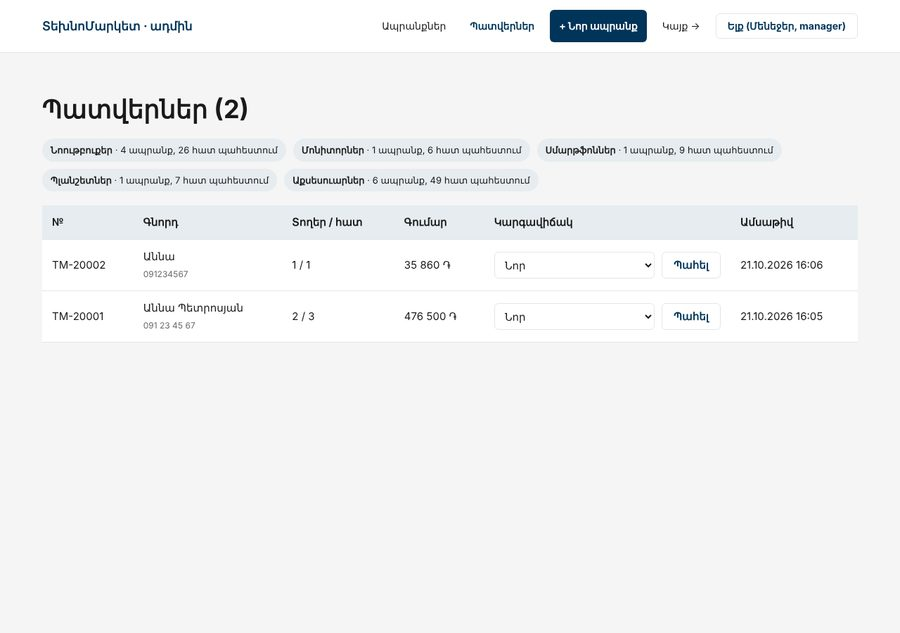

Առաջադրանք 3 / 3 · PHP Դաս 18–24 · պաշտպանություն
Նույն խանութը երրորդ անգամ, բայց հիմա ֆրեյմվորքով։ Ամեն Laravel գործիք փոխարինում է մի բան, որ արդեն գրել ես ձեռքով, և դու գիտես, թե ինչ է այն անում ներսում։ Դաս 22-ում նախագիծը հրապարակվում է, Դաս 24-ում՝ պաշտպանվում։ Օրինակը՝ example-3-laravel։
Արտաքինից՝ Առաջադրանք 2-ի նույն խանութը, նույն CSS-ով և նույն հասցեներով։ Ներսում՝ Laravel․ միգրացիաներ, Eloquent մոդելներ, Blade կոմպոնենտներ, Form Request-ներ, Fortify և Gate-եր։ Վերջում նախագիծը հրապարակված է HTTPS-ով, ունի README և demo հաշիվ, և դու կարող ես այն պաշտպանել 10 րոպեում։


| Առաջադրանք 2-ում ձեռքով | Laravel-ում | Դաս |
|---|---|---|
routes.php + Router | routes/web.php, անուններով ուղիներ, Route::resource | 18, 19 |
views/*.php + e() | Blade, {{ }}, <x-product-card> | 19 |
bootstrap.php-ի new ...Controller(...) | autowiring կոնստրուկտորով | 19 |
sql/schema.sql, seed.sql | միգրացիաներ, DatabaseSeeder, factory | 20 |
ProductRepository | Eloquent՝ scopeActive(), scopeFilter(), կապեր | 20 |
archive() | SoftDeletes, «Ջնջվածներ» և restore() | 20 |
Validator::product() | ProductRequest | 21 |
Auth, LoginThrottle, RegisterController | Fortify | 21 |
isAdmin() կոնտրոլերում | Gate::authorize('delete-products') | 21 |
example-3-laravel/-ում միայն մեր ֆայլերն են՝ մոտ 70։ Laravel-ը և Fortify-ը տեղադրում է Composer-ը (Դաս 18), և դրանք պահոցում չեն լինում (.gitignore)։ README-ում՝ թե ինչպես պատճենել ֆայլերը նոր նախագծի վրա։
Նոր նախագիծ՝ technomarket-laravel, Առաջադրանք 2-ի կողքին, ոչ նրա փոխարեն (Դաս 18)։ Առաջադրանք 2-ից պատճենում ես միայն public/css, public/images և շաբլոնների HTML-ը։
| Դաս | Ինչ ես անում | Քայլ |
|---|---|---|
| 18 | create-project, .env, կատալոգ և ապրանքի էջ DB::table-ով, սպիտակ ցուցակ | 1 |
| 19 | Layout, կոմպոնենտներ, View composer, Cart ծառայություն, ադմինի resource controller | 2 |
| 20 | Միգրացիաներ, մոդելներ, seeder, with(), route model binding, soft delete, ProductResource | 3 |
| 21 | Form Request-ներ, հայերեն սխալներ, Fortify, Gate-եր | 4 |
| 22 | Deploy, smoke test, README, demo հաշիվ, GitHub և LinkedIn | 5 |
| 23–24 | CV-ում՝ նախագծի bullet-ներ, պաշտպանություն և փորձնական հարցազրույց | 6 |
composer create-project laravel/laravel technomarket-laravel, .env-ում՝ MySQL, APP_LOCALE=hyDB::table('products')-ով, Առաջադրանք 2-ի բազայի վրա։ Դաս 20-ում այն կփոխարինվի Eloquent-ովphp artisan route:list՝ համեմատիր Առաջադրանք 2-ի routes.php-ի հետ// ---------- Հանրային ----------
Route::get('/', [ProductController::class, 'home'])->name('home');
Route::get('/catalog', [ProductController::class, 'index'])->name('catalog');
Route::get('/category/{category:slug}', [ProductController::class, 'category'])->name('category');
Route::get('/product/{product:slug}', [ProductController::class, 'show'])->name('product.show'); // Դաս 20
Route::get('/contact', [ContactController::class, 'form'])->name('contact');
Route::post('/contact', [ContactController::class, 'submit'])->name('contact.submit');
Route::post('/theme', [ContactController::class, 'theme'])->name('theme');
// ---------- Զամբյուղlayouts/app.blade.php, partials/header, partials/footer՝ Առաջադրանք 2-ի layout-ից։ <?= e($x) ?> → {{ $x }}<x-product-card> (slot-ով կոճակի համար), <x-alert>, <x-field>App\Services\Cart՝ session()-ով, առանց &$storage-ի։ Header-ի թիվը՝ View::composer-ով, ոչ View::share-ով (Դաս 19-ի փորձ 2)CartController::store()՝ մեկ մեթոդ երկու ձևաչափի համար․ expectsJson() → JSON, այլապես՝ back()make:controller Admin/ProductController --resource, ֆորման՝ մեկ շաբլոն ստեղծման և խմբագրման համար (@method('PUT'))@props(['product'])
<article {{ $attributes->class(['card', 'is-out' => ! $product->inStock()]) }}>
@if ($product->hasDiscount())
<span class="card__badge">-{{ $product->discount }}%</span>
@elseif ($product->isNew())
<span class="card__badge card__badge--new">Նոր</span>
@endif
<picture class="card__media ratio-3-2">
<img class="img-cover" src="{{ $product->imageUrl() }}" alt="{{ $product->name }}" width="600" height="400" loading="lazy">
</picture>
<div class="card__body">
<h3 class="card__title"><a href="{{ route('product.show', $product) }}">{{ $product->name }}</a></h3>
<p class="card__meta">{{ $product->specs }}</p>
@if ($product->isDigital())
<p class="card__note">Ակնթարթային առաքում էլ. փոստով</p>
@elseif ($product->isLowStock())
<p class="card__warning">Մնացել է {{ $product->stock }} հատ</p>
@endif
<div class="card__footer">
<p class="card__price">
{{ $product->formattedPrice() }}
@if ($product->hasDiscount())<del>{{ $product->formattedOldPrice() }}</del>@endif
</p>
{{ $slot }}
</div>
</div>
</article> View::composer('partials.header', function (\Illuminate\View\View $view) {
$view->with([
'cartCount' => app(Cart::class)->count(),
'navCategories' => Category::orderBy('id')->get(['id', 'name', 'slug']),
]);
});technomarket_laravel, միգրացիաներ՝ categories, products, orders, order_items, users.role$fillable-ով (role-ը՝ ոչ), casts()-ով, Առաջադրանք 2-ի մեթոդներով (finalPrice(), inStock()...)Model::shouldBeStrict()։ Ամեն ցուցակ՝ with('category')-ով, պատվերի էջը՝ load('items.product')buildWhere()-ը՝ scopeFilter(), when()-ովDB::transaction(), պահեստը՝ where('stock', '>=', $qty)->decrement()onlyTrashed()-ով և restore() (Դաս 20-ի տնային), ProductResource՝ /api/products-ի համար /** Առաջադրանք 1-ի buildWhere()-ը՝ Eloquent-ով։ Ամեն պայման՝ միայն եթե ֆիլտրը կա */
public function scopeFilter(Builder $query, array $filters): void
{
$query
->when($filters['category_id'] ?? null, fn (Builder $q, int $id) => $q->where('category_id', $id))
->when($filters['q'] ?? null, fn (Builder $q, string $text) => $q->where(fn (Builder $w) => $w
->where('name', 'like', '%' . addcslashes($text, '%_\\') . '%')
->orWhere('specs', 'like', '%' . addcslashes($text, '%_\\') . '%')))
->when(isset($filters['min']), fn (Builder $q) => $q->whereRaw('ROUND(price * (100 - discount) / 100) >= ?', [$filters['min']]))
->when(isset($filters['max']), fn (Builder $q) => $q->whereRaw('ROUND(price * (100 - discount) / 100) <= ?', [$filters['max']]))
->when(($filters['stock'] ?? 'all') === 'in', fn (Builder $q) => $q->where(fn (Builder $w) => $w->where('stock', '>', 0)->orWhere('type', 'digital')))
->when(($filters['stock'] ?? 'all') === 'sale', fn (Builder $q) => $q->where('discount', '>', 0));
} $order = DB::transaction(function () use ($data, $items, $summary, $request) {
$order = new Order(collect($data)->except('agree')->all() + [
'shipping' => $summary['shipping'],
'total' => $summary['total'],
]);
$order->user_id = $request->user()?->id; // ⭐ ոչ ֆորմայից
$order->save();
foreach ($items as $item) {
$product = $item['product'];
$order->items()->create([
'product_id' => $product->id,
'quantity' => $item['qty'],
'price' => $product->finalPrice(),
]);
if ($product->isDigital()) {
continue;
}
// UPDATE ... WHERE stock >= qty — վերջին ապրանքը երկու հոգու չի վաճառվի
$updated = Product::whereKey($product->id)->where('stock', '>=', $item['qty'])->decrement('stock', $item['qty']);
if ($updated === 0) {
// Բացառությունը → rollBack, իսկ ValidationException-ը → վերադարձ ֆորմա՝ սխալով
throw ValidationException::withMessages(['cart' => 'Պահեստում բավարար չէ՝ ' . $product->name]);
}
}
return $order;
});User::create([..., 'role' => 'admin'])-ը խիստ ռեժիմում կգցի սխալ, առանց դրա՝ կանտեսի role-ը (Դաս 20-ի փորձ 3)։ Ճիշտ ձևը՝ $user->role = 'admin'; $user->save();։ Նույնը Order-ի user_id-ի և status-ի համար․ դրանք դնում է կոդը, ոչ ֆորման։
ProductRequest, CheckoutRequest, ContactRequest՝ attributes()-ով հայերեն անունների համարlang/hy/validation.php և auth.php։ Թարգմանիր AI-ով և ստուգիր, որ տեղապահները (:attribute, :max) անփոփոխ ենloginView, registerView, CreateNewUser՝ հայերեն անուններով, առանց role-իmanage-products (ադմին, մենեջեր) և delete-products (միայն ադմին)։ Ադմինի ուղիները՝ ['auth', 'can:manage-products'], destroy()-ում՝ Gate::authorize'image', 'mimes:jpg,jpeg,png,webp', 'max:2048' և ->store('products', 'public'), php artisan storage:link // ⭐ 1. Մուտքից հետո՝ աշխատակիցը ադմին, գնորդը գլխավոր էջ (Դաս 16-ի AuthController-ի նույն կանոնը)
// config('fortify.home')-ը բոլորի համար նույնն է, ուստի գնորդը կստանար 403
$this->app->instance(LoginResponse::class, new class implements LoginResponse {
public function toResponse($request)
{
$home = $request->user()->isStaff() ? route('admin.products.index') : route('home');
return redirect()->intended($home);
}
});Դաս 21-ում 'home' => '/admin/products'։ Ադմին վահանակի համար դա ճիշտ է, բայց գնորդը նույնպես կուղարկվի այնտեղ և կստանա 403։ Առաջադրանք 2-ում AuthController-ը որոշում էր ըստ դերի․ նույն կանոնը Laravel-ում՝ սեփական LoginResponse-ով։ config/fortify.php-ում թող 'home' => '/'։
public function destroy(Product $product)
{
// ⭐ Ուղու can:manage-products-ը թույլ է տալիս մենեջերին։ Ջնջելը՝ միայն ադմինին
Gate::authorize('delete-products');
$product->delete(); // փափուկ — Դաս 20
return redirect()->route('admin.products.index')->with('success', 'Ապրանքը հեռացվեց՝ ' . $product->name);
}git log --all --oneline -- .env՝ դատարկ։ .env.example-ում՝ միայն բանալիներ, ոչ գաղտնիքներpublic/, HTTPS.env՝ APP_ENV=production, APP_DEBUG=false, SESSION_SECURE_COOKIE=true, առանձին DB օգտագործողDemoSeeder՝ manager դերով հաշիվ, որ չի կարող ջնջել (README-ում՝ մուտքի տվյալները)composer install --no-dev --optimize-autoloader
php artisan key:generate
php artisan migrate --force
php artisan db:seed --force # կատեգորիաներ և ապրանքներ (users՝ միայն local-ում)
php artisan db:seed --class=DemoSeeder --force
php artisan storage:link
php artisan optimize
curl -I https://technomarket.example.am/.env # 404
curl -I https://technomarket.example.am/composer.json # 404
curl -I https://technomarket.example.am/storage/logs/laravel.log # 404class DemoSeeder extends Seeder
{
public function run(): void
{
$password = env('DEMO_PASSWORD');
if (! $password) {
$this->command->error('Լրացրու DEMO_PASSWORD-ը .env-ում');
return;
}
$user = User::firstOrNew(['email' => 'demo@technomarket.example.am']);
$user->name = 'Demo';
$user->password = $password;
$user->role = 'manager'; // ոչ admin ⭐
$user->save();
$this->command->info('Demo հաշիվը պատրաստ է՝ manager դերով');
}
}| Սխալ | Ինչպես ուղղել |
|---|---|
LazyLoadingViolationException | Ցուցակում օգտագործում ես կապ առանց with()-ի։ Սա խիստ ռեժիմի նպատակն է (Դաս 20) |
MassAssignmentException կամ «Add [role] to fillable» | Մի՛ ավելացրու role-ը $fillable-ում։ Վերագրիր ուղիղ |
| Header-ի թիվը միշտ 0 է | View::share-ը հաշվում է boot()-ում, նախքան սեսիան։ View::composer (Դաս 19) |
/login-ը 404 է | Fortify-ի provider-ը գրանցված չէ bootstrap/providers.php-ում, կամ Features-ում բացակայում է |
| Գրանցումից հետո՝ 403 | redirects.register → /, մուտքից հետո՝ LoginResponse (Քայլ 4) |
| Վերբեռնված նկարը 404 է | php artisan storage:link, և imageUrl()-ը պետք է տարբերի storage/-ը images/-ից |
| Սխալները անգլերեն են | APP_LOCALE=hy և lang/hy/validation.php, իսկ php artisan config:clear, եթե config-ը քեշված է |
| fetch-ը ստանում է HTML redirect, ոչ JSON | Պակասում է Accept: application/json վերնագիրը, ուստի expectsJson()-ը false է |
| Production-ում՝ stack trace | APP_DEBUG=true, կամ .env-ը փոխելուց հետո չես կանչել php artisan optimize |
/product/գոյություն-չունի՝ 404, /?sort=price;DROP TABLE products՝ սովորական ցուցակ<script>alert(1)</script> անունով՝ տեքստ, ոչ alert։ {!! !!}-ը նախագծում՝ միայն nl2br(e(...))-ի հետwith('category')-ը ադմինի ցուցակից․ LazyLoadingViolationException։ Վերադարձրուdiscount=150՝ հայերեն սխալներ, մյուս դաշտերը մնացել ենcategory_id=99999 curl-ով՝ Rule::exists-ը բռնում է/admin/products/1/edit → մուտք → վերադարձ նույն էջrole=admin-ով՝ customer, գլխավոր էջ, /admin/products՝ 403APP_DEBUG=false, /.env և /composer.json՝ 404Ամեն ուսանողին՝ 10 րոպե։ Սա նաև Դաս 24-ի փորձնական հարցազրույցի նախապատրաստություն է․ նույն հարցերը կտան աշխատանքի հարցազրույցում, երբ բացես քո GitHub-ը։
| Ինչ ցույց տալ | Րոպե |
|---|---|
| Ցուցադրություն՝ հրապարակված կայքում․ կատալոգ → ապրանք → զամբյուղ → պատվեր, ապա demo հաշվով ադմին | 3 |
Մեկ հարցում՝ սկզբից մինչև վերջ․ POST /cart/items-ը՝ ուղի → middleware → կոնտրոլեր → Cart → JSON | 2 |
| Անվտանգության երեք որոշում և թե ինչ կլիներ առանց դրանց | 2 |
| Մեկ բան, որ դասընթացում չկար (Դաս 22-ի տնային․ վարկանիշ, wishlist, email...) | 2 |
| Հարցեր | 1 |
role-ը $fillable-ում չէ։ Ինչ կլիներ, եթե լիներ (Դաս 20)@can-ը բավական չէ (Դաս 21)products-ում (Դաս 9)fortify.home, shouldBeStrict, APP_LOCALE)| Չափանիշ | Միավոր |
|---|---|
| Ֆունկցիոնալություն․ բոլոր սցենարները աշխատում են demo-ում | 20 |
| Անվտանգություն․ բաժին 05-ի փորձարկումները, դերերի ստուգումը սերվերում | 20 |
| Բազա և Eloquent․ միգրացիաներ, կապեր, N+1-ի բացակայություն, տրանզակցիա | 15 |
| Կոդի կառուցվածք․ բարակ կոնտրոլերներ, Form Request-ներ, կոմպոնենտներ | 15 |
| HTML/CSS, հասանելիություն, JS-ը՝ progressive enhancement | 10 |
| Հրապարակում, README, Git | 15 |
| Ներկայացում և պատասխաններ | 5 |
| Ընդամենը | 100 |
ՏեխնոՄարկետը սովորելու համար էր։ Դասընթացից հետո՝ վերջնական նախագիծը․ նույն տեխնոլոգիաները, բայց քո թեման, քո սխեման և մեկ «դժվար ֆունկցիա», որ ոչ մի ուղեցույցում չկա։ Պորտֆոլիոյում կլինեն երկուսը՝ մեկը, որտեղ սովորեցիր, մյուսը՝ որտեղ ինքնուրույն որոշեցիր։